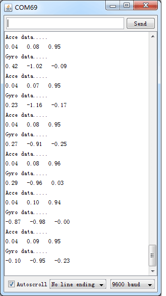
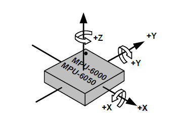

Xadow - IMU 6DOF is a motion tracking module. Its design is based on the sensor MPU6050 which is the world’s first integrated 6-axis MotionTracking device, that combines a 3-axis gyroscope, 3-axis accelerometer, and a Digital Motion Processor™ (DMP). MPU6050 features three 16-bit analog-to-digital converters (ADCs) for digitizing the gyroscope outputs and three 16-bit ADCs for digitizing the accelerometer outputs so Xadow - IMU 6DOF achieves a high converter accuracy. For precision tracking of both fast and slow motions, the parts feature a user-programmable gyroscope full-scale range and a user-programmable accelerometer full-scale range.
Based on our available library，you can get accele and gyro value easily.Now let's show how to use the module.
Hardware Connection：
Picture
Note: when connect Xadow IMU 6DOF to Xadow Main Board, the connection direction should be cautious. The connection method is that the unfilled corner of one Xadow module connect to the right angle of another module(see four corners of each Xadow module).
Test Code：
#include <I2Cdev.h>//add necessary headfiles
#include <MPU6050.h>//add necessary headfiles
#include <Wire.h>
//====the offset of gyro===========
#define Gx_offset -1.50
#define Gy_offset 0
#define Gz_offset 0.80
//====the offset of accelerator===========
#define Ax_offset -0.07
#define Ay_offset 0.02
#define Az_offset 0.14
//====================
MPU6050 accelgyro;
int16_t ax,ay,az;//original data;
int16_t gx,gy,gz;//original data;
float Ax,Ay,Az;//Unit g(9.8m/s^2)
float Gx,Gy,Gz;//Unit deg/s
void setup()
{
Wire.begin();
Serial.begin(9600);
Serial.println("Initializing I2C device.....");
accelgyro.initialize();
Serial.println("Testing device connections...");
Serial.println(accelgyro.testConnection() ? "MPU6050 connection successful":"MPU6050 connection failure");
}
void loop()
{
accelgyro.getMotion6(&ax,&ay,&az,&gx,&gy,&gz);//get the gyro and accelerator
//==========accelerator================================
Ax=ax/16384.00;//to get data of unit(g)
Ay=ay/16384.00;//to get data of unit(g)
Az=az/16384.00;//to get data of unit(g)
Serial.println("Acce data.....");
Serial.print(Ax+Ax_offset);
Serial.print(" ");
Serial.print(Ay+Ay_offset);
Serial.print(" ");
Serial.println(Az+Az_offset);
//===============gyro================================
Gx=gx/131.00;
Gy=gy/131.00;
Gz=gz/131.00;
Serial.println("Gyro data.....");
Serial.print(Gx+Gx_offset);
Serial.print(" ");
Serial.print(Gy+Gy_offset);
Serial.print(" ");
Serial.println(Gz+Gz_offset);
//blinkState=!blinkState;
//digitalWrite(LED_PIN,blinkState);
delay(1000);//control time of sampling
}

In static state，the z-Axis output value is about 0.98g，so you can refer to this to test if your sensor can work normally.
Orientation of Axes
The diagram below shows the orientation of the axes of sensitivity and the polarity of rotation.
